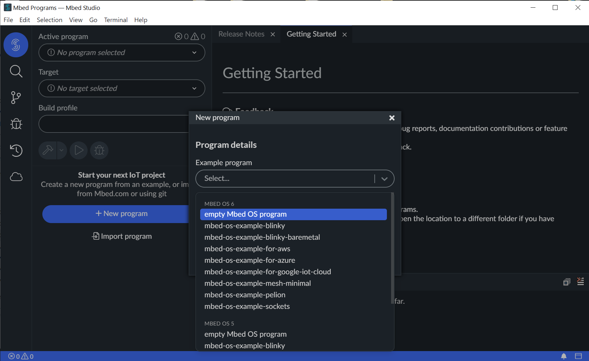

แนะนำการใช้งาน Arm Mbed Studio IDE#
Keywords: Mbed OS, RTOS, Micrcontroller Programming, Multi-Threading
▷ ซอฟต์แวร์สำหรับการเขียนโปรแกรมด้วย Arm Mbed OS#
Mbed OS เป็นซอฟต์แวร์ประเภท Open Source RTOS ของบริษัท Arm Ltd. และใช้ได้เฉพาะกับไมโครคอนโทรลเลอร์ที่มีตัวประมวลผล ตามสถาปัตยกรรมของซีพียู เช่น Arm Cortex-M Series / A-Series
หากต้องการใช้งาน Mbed OS ก็มีตัวเลือกซอฟต์แวร์ประเภท IDE และเลือกใช้ได้กับ Arm Compiler และ GNU Arm Embedded Toolchain แต่ถัาจะใช้งานแบบออนไลน์ ก็ให้เลือก Mbed Online Compiler (classic) หรือ Keil Studio Cloud (new)
ถ้าจะติดตั้งใช้งานซอฟต์แวร์ในเครื่องคอมพิวเตอร์ของผู้ใช้ ก็ให้เลือก Mbed Studio IDE ซึ่งจะกล่าวถึงและแนะนำการใช้งานในส่วนถัดไปของเอกสารนี้ (ทดลองใช้ Mbed Studio เวอร์ชัน v1.4.3 / Windows 10 (64-bit))
 รูปภาพ: ตัวเลือกซอฟต์แวร์ที่เกี่ยวข้องกับการใช้งาน Mbed OS
รูปภาพ: ตัวเลือกซอฟต์แวร์ที่เกี่ยวข้องกับการใช้งาน Mbed OS
▷ ขั้นตอนการใช้งานซอฟต์แวร์ Mbed Studio#
- เปิดใช้งานซอฟต์แวร์ Mbed Studio IDE
- หากยังไม่เคยติดตั้งใช้งานให้ดำเนินการติดตั้งก่อน และดาวน์โหลดไฟล์ติดตั้งได้จาก → https://os.mbed.com/studio/
- ทำขั้นตอน "Creating or importing a program" เลือกโปรแกรมจากรายการที่มีอยู่แล้ว หรือนำเข้าใหม่ หรือสร้างใหม่ แล้วกำหนดให้เป็น Active Program
- เลือกโปรไฟล์สำหรับโปรเจกต์ หรือรูปแบบการสร้างโปรแกรม (Program Profile) หรือเรียกว่า Build Profile มี 3 ตัวเลือกคือ {Debug | Develop | Release}
- หากสร้างโปรแกรมใหม่ ก็มีขั้นตอนง่าย ๆ ดังนี้
- เลือกสร้างโปรแกรมจากโปรเจกต์ตัวอย่าง (Program Template) หรือโปรแกรมตัวอย่าง
- ให้ระบุชื่อโปรแกรม (Program Name)
- เลือกบอร์ดไมโครคอนโทรลเลอร์ที่จะใช้งาน (Target Platform)
- เขียนโค้ด เช่น ในไฟล์
main.cppหรือเพิ่มไฟล์สำหรับ Source Code รวมถึงการนำเข้าไลบรารี (Libraries) อย่างน้อยจะต้องมีไลบรารีmbed-osโดยระบุไว้ในไฟล์mbed-os.lib
- เพิ่มหรือแก้ไขไฟล์
mbed_app.jsonในไดเรกทอรีของโปรแกรม เพื่อตั้งค่าการใช้งานสำหรับโปรแกรม ก่อนเริ่มทำขั้นตอน Build - ทำขั้นตอน Building and running a program
เพื่อคอมไพล์โค้ดของโปรแกรม
- คอมไพล์หรือสร้างใหม่ Rebuild เฉพาะไฟล์ที่มีการเปลี่ยนแปลงแก้ไขหรือมีส่วนเกี่ยวข้องเท่านั้น
- หากต้องการคอมไพล์ทุกไฟล์อีกครั้งทั้งหมด ให้เลือก Clean Build แต่จะใช้เวลามากกว่า (อาจมากกว่า 10 นาที)
- หากเลือกโปรไฟล์ Debug ก็ให้ทำขั้นตอนดีบักโปรแกรมโดยใช้บอร์ดทดลองที่นำมาต่อกับคอมพิวเตอร์ของผู้ใช้
ความแตกต่างระหว่างโปรไฟล์
- Debug Profile (default) จะใช้สำหรับกรณีที่ต้องการดีบักโค้ด
ใน Debug Sesssion ของ Mbed Studio
เหมาะสำหรับการตรวจสอบการทำงานของโปรแกรมโดยใช้บอร์ดทดลอง
ขนาดของโปรแกรมที่ได้จะมีขนาดใหญ่กว่าโปรไพล์อื่น เนื่องจากโปรแกรมมีข้อมูลและการทำงานที่ช่วยในการดีบัก
และมีข้อมูลเกี่ยวกับความผิดพลาด (Full Error Information) หากเกิด Run-time Error ในขณะที่โปรแกรมทำงาน การทำงานของโปรแกรมจะช้ากว่า
และโปรแกรมจะไม่ทำงานโหมด Sleep เนื่องจากจะต้องดีบักโปรแกรมและเชื่อมต่อกับซอฟต์แวร์ Mbed Studio ต่อเนื่องไป - Release Profile เลือกใช้โปรไฟล์นี้หากต้องการได้โปรแกรมที่มีขนาดเล็กที่สุด ทำงานได้มีประสิทธิภาพสูงสุด แต่ไม่สามารถนำไปใช้กับการดีบัก หากโปรแกรมทำงานผิดพลาด เกิด Run-time Error จะมีข้อมูลปรากฎทาง Serial อย่างจำกัด โปรแกรมสามารถเข้าสู่โหมด Sleep ได้
- Develop Profile เหมือนกรณีที่ใช้โปรไฟล์ Debug แต่ไม่สามารถนำไปใช้กับการดีบักได้ อาจกล่าวได้ว่า เป็นตัวเลือกกลางระหว่างโปรไฟล์ Debug กับ Release
ให้ลองดูรูปประกอบตามขั้นตอนต่อไปนี้
รูปภาพ: หน้าต่างหลัก (Main Windows) ของ MBed Studio IDE
รูปภาพ: ทำขั้นตอนสร้างโปรแกรมใหม่ เลือกจากเมนูคำสั่ง File > New Program...
 รูปภาพ: สร้างโปรแกรมใหม่สำหรับใช้งาน Mbed OS โดยเลือก "empty Mbed OS Program
รูปภาพ: ตั้งชื่อสำหรับโปรแกรมใหม่ และ ระบุว่าจะเลือกใช้ไลบรารี mbed-os จากที่ใด
ในตัวอย่างนี้ได้มีการดาวน์โหลดไลบรารี mbed-os (เป็น master branch)
มาจาก Github และเก็บไว้ในไดเรกทอรี C:\Work\mbed\mbed-os
แล้วจึงแชร์ใช้งานระหว่างโปรแกรม
ข้อสังเกต: การสร้างโปรแกรมใหม่ใน Mbed Studio
จะมีการดาวน์โหลดไฟล์ต่าง ๆ ของไลบรารี mbed-os
จาก Github มาโดยอัตโนมัติ เก็บไว้ในไดเรกทอรีของโปรแกรมที่ต้องการสร้างและใช้งาน
ซึ่งไฟล์จำนวนมากและอาจใช้เวลานาน ดังนั้นจึงแนะนำให้ดาวน์โหลดจาก Github
มายังคอมพิวเตอร์ของผู้ใช้ แล้วแชร์ใช้งานระหว่างโปรแกรม เพื่อประหยัดพื้นที่ในการจัดเก็บ
หากมีการสร้างโปรแกรมหลาย ๆ โปรแกรมใน Mbed Studio
รูปภาพ: เลือกบอร์ดไมโครโทรลเลอร์เป้าหมาย ในตัวอย่างนี้เลือกบอร์ด NUCLEO-L476RG เป็นตัวอย่าง
 รูปภาพ: เปิดไฟล์
รูปภาพ: เปิดไฟล์ main.cpp ของโปรแกรม และจะเห็นว่า มีตัวอย่างโค้ดใส่มาให้แล้ว
รูปภาพ: แก้ไขตามโค้ดตัวอย่าง บันทึกการเปลี่ยนแปลง และทำขั้นตอน Build
ตัวอย่างไฟล์: main.cpp
#include "mbed.h"
DigitalOut led(LED1); // use onboard LED 1
int main()
{
int state;
printf( "Mbed OS 6 Demo - Nucleo LED Blink\n" );
printf( "Mbed OS version %d.%d.%d\n",
MBED_MAJOR_VERSION,
MBED_MINOR_VERSION,
MBED_PATCH_VERSION );
while (true) {
state = !led.read(); // update the new state
printf( "LED State: %d\n", state );
led = state; // update the LED state
ThisThread::sleep_for( 500ms );
}
}
ตัวอย่างไฟล์: mbed_app.json เช่น การตั้งค่า Baudrate สำหรับ
คำสั่ง printf() สำหรับเอาต์พุตผ่านทาง Serial การเลือกใช้ไลบรารีสำหรับ
Standard C Library และไลบรารีสำหรับคำสั่ง printf() ซึ่งมีผลต่อการทำงาน
และขนาดของโปรแกรมที่ได้จากการคอมไพล์
{
"target_overrides": {
"*": {
"platform.stdio-convert-newlines": true,
"platform.stdio-baud-rate": 115200,
"platform.stdio-buffered-serial": 1,
"target.c_lib": "std",
"target.printf_lib": "std"
}
}
}
ข้อสังเกต: ในการทำขั้นตอน Build สำหรับโปรแกรมที่สร้างขึ้นใหม่ครั้งแรก
หรือมีการแก้ไขไฟล์ที่เกี่ยวข้องกับการกำหนดค่า เช่น ไฟล์ mbed_app.json
หรือทำขั้นตอน Clean Build จะต้องคอมไพล์ไฟล์ทั้งหมด และใช้เวลาค่อนข้างนาน
หากนำบอร์ดไมโครคอนโทรลเลอร์เป้าหมายมาเชื่อมต่อกับคอมพิวเตอร์ของผู้ใช้ทางพอร์ต USB ในส่วน Target จะมีการตรวจสอบโดยอัตโนมัติ ให้เลือกอุปกรณ์จากรายการที่ปรากฎ ถ้าเป็นบอร์ด NUCLEO จะเห็นหมายเลข S/N ของวงจร ST-Link/v2 ของบอร์ดดังกล่าว
รูปภาพ: การเลือกอุปกรณ์ที่ปรากฎในหน้าต่างย่อย Manage Custom Targets และบันทึกการตั้งค่าใช้งาน
ถ้ามองเห็นบอร์ดทดลองที่ได้นำมาเชื่อมต่อได้แล้ว ก็สามารถอัปโหลดโปรแกรมไปยังบอร์ด หรือทำขั้นตอนดีบัก โดยเข้าสู่ Debug Session ตามลำดับ
 รูปภาพ: ข้อความเอาต์พุต (ใน Output Tab) เมื่อทำขั้นตอน Build ได้สำเร็จแล้ว
รูปภาพ: ข้อความเอาต์พุต (ใน Output Tab) เมื่อทำขั้นตอน Build ได้สำเร็จแล้ว
รูปภาพ: เข้าสู่ Debug Session ได้สำเร็จ มีข้อความปรากฎใน Debug Console Tab โปรแกรมได้ถูกอัปโหลดไปยังบอร์ดทดลองและหยุดการทำงานชั่วคราว จะให้ทำต่อไปทีละคำสั่ง หรือทำไปจนถึงตำแหน่งที่เป็น Breakpoint ก็สามารถเลือกได้ หรือจะกลับไปเริ่มต้นการทำงานใหม่อีกครั้งก็ได้
ข้อสังเกต:
- การทำงานของในโหมด Debug ของ Mbed Studio จะใช้โปรแกรมในภาษา Python 3 ที่มีชื่อว่า PyOCD ใช้สำหรับการอัปโหลดไฟล์เฟิร์มแวร์ และดีบักการทำงานของไมโครคอนโทรลเลอร์ตระกูล Arm Cortex-M และรองรับการใช้งานอุปกรณ์ประเภท USB Debug Probe หลายรูปแบบที่เชื่อมต่อกับคอมพิวเตอร์ของผู้ใช้ เช่น DAPLink CMSIS-DAP / SEGGER J-Link / STLink-V2/V3 เป็นต้น
- บอร์ด ST NUCLEO มีวงจรที่ทำหน้าที่เป็น STLink-V2 อยู่แล้ว แต่ถ้าจะใช้งานกับ Mbed Studio แนะนำให้อัปเกรดเฟิร์มแวร์ของอุปกรณ์ STLink-V2 ให้เป็นเวอร์ชันล่าสุด (และทำได้ไม่ยาก หากใช้โปรแกรม เช่น STM32CubeProgrammer)
รูปภาพ: โปรแกรมทำงานในฮาร์ดแวร์จริงและมาหยุดในบรรทัดที่ได้เลือกไว้เป็นตำแหน่ง Breakpoint
รูปภาพ: ตัวอย่างข้อความเอาต์พุตที่ได้รับจากบอร์ดทดลองและแสดงผลใน Serial Monitor (ตั้งค่า baudrate 115200 ตามที่ได้กำหนดไว้)
▷ การเลือกใช้งานคอมไพล์เลอร์ GNU ARM GCC#
เมื่อได้ติดตั้งใช้งาน Mbed Studio ก็จะมาพร้อมกับคอมไพล์เลอร์ Arm Compiler 6 Toolchain (ARMC6) และมีให้ใช้สำหรับ
Windows หรือ Linux (โดยปรกติแล้ว ซอฟต์แวร์นี้จะใช้กับ Arm Development Studio
หรือ Keil MDK)
แต่ถ้าหากว่า ต้องการเปลี่ยนไปใช้คอมไพล์เลอร์
GNU Arm Embedded Toolchain
(GCC_ARM) ก็ทำได้เช่นกัน
มีเลือกใช้ได้สำหรับ Windows / Linux / Mac OS
หรือจะดาวน์โหลดไฟล์สำหรับติดตั้งใช้งานจาก "The xPack GNU Arm Embeddded GCC" ก็ได้
ถ้าจะเปลี่ยนไปใช้ GCC ก็มีขั้นตอนดังนี้ (อ้างอิง) ให้สร้างไฟล์
external-tools.json เก็บไว้ในไดเรกทอรี ตามตัวอย่างต่อไปนี้
C:\Users\%USERNAM%\AppData\Local\Mbed Studio\(Windows) หรือ~/.config/Mbed Studio/(Linux)
ตัวอย่างไฟล์: external-tools.json
{
"bundled": {
"gcc": "C:\\Tools\\xpack\\xpack-arm-none-eabi-gcc-9.3.1-1.4\\bin"
},
"defaultToolchain": "GCC_ARM"
}
จากตัวอย่างจะเห็นว่า มีการระบุว่า PATH ของซอฟต์แวร์ GCC_ARM ของ XPack
อยู่ในไดเรกทอรี C:\\Tools\\xpack\\xpack-arm-none-eabi-gcc-9.3.1-1.4
(ให้ไว้เป็นตัวอย่างเท่านั้น หากติดตั้งไว้ในไดเรกทอรีอื่น ก็ปรับแก้ไขให้ถูกต้อง) สำหรับระบบปฏิบัติการ Windows
เมื่อแก้ไขไฟล์ external-tools.json แล้วจะต้องคอมไพล์โค้ดใน Mbed Studio ใหม่อีกครั้ง
(ทำขั้นตอน Clean Build)
▷ การใช้งาน Mbed CLI#
ถ้าหากจะลองใช้ Mbed CLI (Version 1) ซึ่งเป็นโปรแกรมที่ทำงานด้วย Python 3 ก็มีขั้นตอนดังนี้ (สำหรับ Windows และได้เคยติดตั้งใช้งาน Python3 for Windows ได้แล้ว)
- เปิด Terminal ใหม่ เพื่อทำคำสั่งใน PowerShell ของ Windows
- ทำคำสั่งเพื่อติดตั้งหรืออัปเกรด Mbed CLI Python Package:
python3 -m pip install mbed-cli -U --user - ตรวจสอบดูเวอร์ชันของ Mbed CLI:
mbed --version(เวอร์ชันที่ทดลองใช้งานคือ v1.10.4) - ย้ายไปภายในไดเรกทอรีของโปรแกรมตัวอย่าง แล้วทำคำสั่ง
mbed config root . - ทำคำสั่ง
mbed configเพื่อระบุว่า GNU Arm Toolchain จะเรียกใช้ได้จากไดเรกทอรีใด ตัวอย่างการทำคำสั่ง:mbed config -G MBED_GCC_ARM_PATH "C:\\Tools\\xpack\\xpack-arm-none-eabi-gcc-9.3.1-1.4\\bin"(ให้ไว้เป็นตัวอย่างเท่านั้น หากติดตั้งไว้ในไดเรกทอรีอื่น ก็ปรับแก้ไขให้ถูกต้อง) - ทำคำสั่ง
mbed configเพื่อระบุว่า จะเรียกใช้ Arm Compiler 6 ได้จากไดเรกทอรีใด ตัวอย่างการทำคำสั่ง:mbed config -G MBED_ARMC6_PATH "C:\\Users\\%USERNAME%\\AppData\\Local\\Mbed Studio\\mbed-studio-tools\\ac6\\bin" - ตรวจสอบการตั้งค่าสำหรับ Mbed CLI ทั้งแบบ global และ local config โดยทำคำสั่ง
mbed config --list - ทำคำสั่ง
mbed compileเพื่อคอมไพล์โปรแกรมใหม่- GCC_ARM:
mbed compile --target NUCLEO_L476RG --toolchain GCC_ARM - ARMC6:
mbed compile --target NUCLEO_L476RG --toolchain ARMC6
- GCC_ARM:
- เมื่อคอมไพล์ได้สำเร็จแล้ว จะได้ไฟล์
.binและหากจะนำไปใช้กับบอร์ด NUCLEO ให้ทำคำสั่งอีกครั้ง แต่เขียนคำว่า--flashต่อท้าย
รูปภาพ: ตัวอย่างการทำคำสั่งติดตั้ง Mbed CLI ใน Terminal
รูปภาพ: ตัวอย่างการทำคำสั่งคอมไพล์โค้ดของโปรแกรมใหม่ด้วยคำสั่ง mbed compile
รูปภาพ: ตัวอย่างข้อความเอาต์พุตใน Terminal
▷ กล่าวสรุป#
ซอฟต์แวร์ Mbed Studio IDE เป็นอีกหนึ่งตัวเลือกสำหรับผู้ที่สนใจใช้งาน Mbed OS หรือเขียนโปรแกรมสำหรับไมโครคอนโทรลเลอร์ตระกูล Arm Cortex-M ด้วย RTOS เอกสารนี้ได้แนะนำขั้นตอนการใข้งานซอฟต์แวร์นี้ในเบื้องต้น โดยทดลองใช้กับบอร์ด ST NUCLEO-L476RG เป็นตัวอย่าง
This work is licensed under a Creative Commons Attribution-ShareAlike 4.0 International License.
Created: 2021-12-03 | Last Updated: 2021-12-04